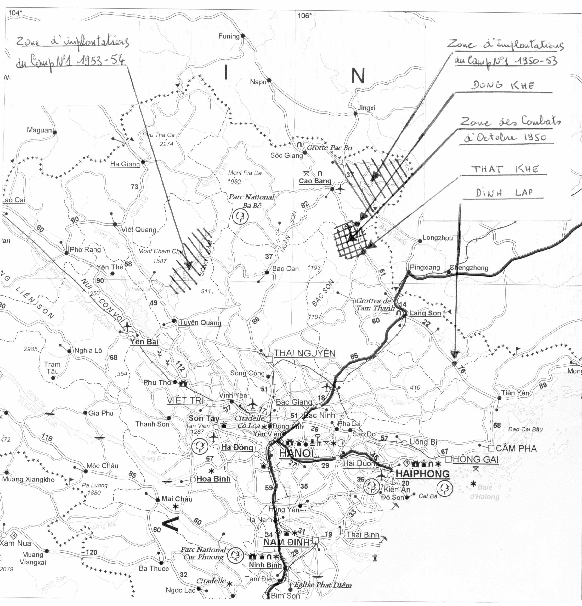

Aller au contenu
← Sommaire
Ma guerre d'Indochine
Annexe
Annexe
La carte

Voir en taille réelle
Ouvrir l’image
Carte annotée à la main par l’auteur, reproduite telle quelle. Clique dessus pour l’afficher en taille réelle, puis fais glisser pour te déplacer dedans.